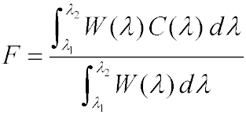
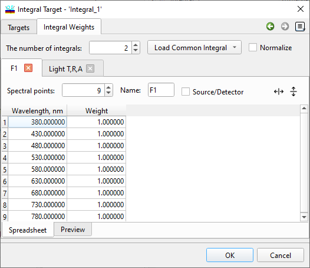
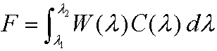
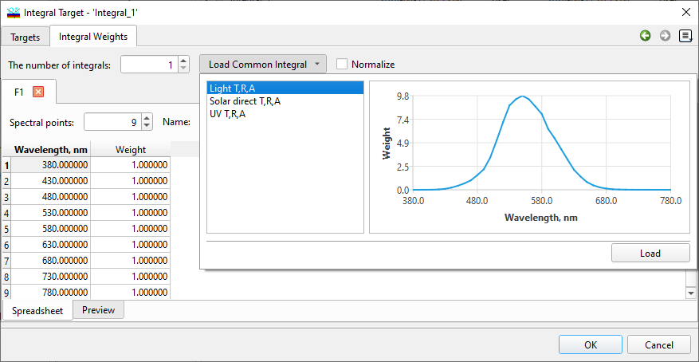
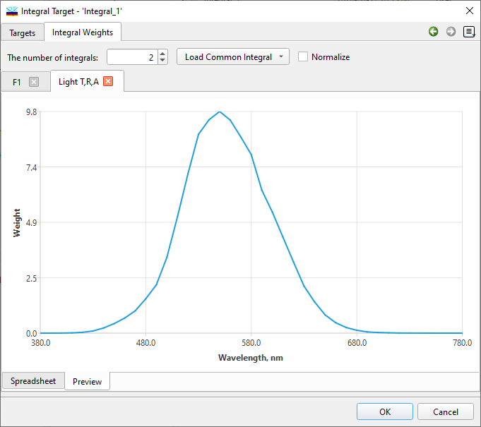
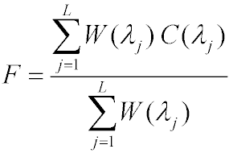
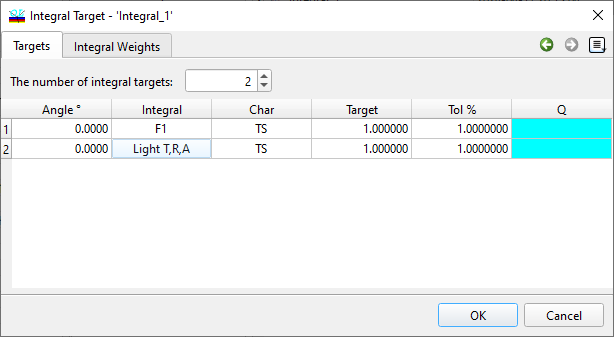
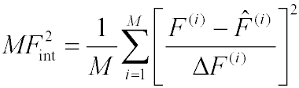
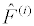
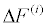

Integral Target
Integral Target
Navigation: OptiLayer Menu Commands > Data Menu >
Integral Target
` <target_peaks.html>`__ ` <idh_menu_data.html>`__ ` <idh_edit_color_target.html>`__
In the OptiLayer software, an integral target is defined as an expression of the form:

where λ1 and λ2 are the boundaries of the wavelength interval of interest, W(λ) is a specified weight function, and C(λ) is a spectral characteristic of a coating. For example, C(λ) could represent Rs for reflectance for s-polarization, Ap for absorptance for p-polarization, or other relevant characteristics. Integral targets in OptiLayer are represented as finite sums and can be viewed as approximations of the integral expression using the rectangle rule formula. This approach allows for the efficient calculation and evaluation of integral targets within the software platform.

On the 2nd page of the Integral Target Editor in OptiLayer, it is essential to specify the spectral weight function W(λ) at a defined wavelength grid. Up to 128 distinct spectral weight functions can be defined and utilized within the current version of OptiLayer. The number of spectral weight functions can be customized using the “The number of integrals” entry field. To access and edit a specific spectral weight function, use the tabs located on the right side of the editor. Alternatively, you can select a spectral weight function by clicking the down-arrow button to reveal a drop-down list of available options. The “Normalized” checkbox allows you to control whether the weight function should be normalized, as outlined in the formula above. If normalization is not required or is undesirable, you can uncheck the “Normalize” option. In such cases, a simplified formula will be used instead.

You can manage spectral weight functions in the Integral Target Editor as follows:
To delete a spectral weight function, use the x button.
To add a new spectral weight function, either increase “The number of integrals” value or click the + button.
Each spectral weight function can be given a customized name for better organization. You can change the default names (F1, F2, etc.) using the “Name” entry field.
The “Source/Detector” checkbox allows you to specify whether the loaded Source and Detector should be considered. In this case, C(λ) in the formula is multiplied by spectral powers of the Source and Detector that are loaded into memory.
Commonly used spectral weight functions are available in the Load Common Integral for quick access. You can utilize predefined spectral weight functions by opening a supplementary dialog with the down-arrow button next to the “Name” entry field.


Note: predefined spectral weight functions can be customized or expanded according to your needs. The corresponding files are stored in Comma-Separated Values (CSV) format with the extension *.IQSP. These files can be accessed in the Catalog location, with the default directory being: “C:\Users\Public\Documents\OptiLayer\Catalog” You can locate and work with these files to modify or extend the predefined spectral weight functions as required for your specific applications within OptiLayer.
The “Preview” tab in the Integral Target Editor enables you to examine the specified weight function visually through graphical representation. This tab provides a graphical view of the weight function, allowing you to inspect its characteristics and make any necessary adjustments or validations before utilizing it in calculations.

In OptiLayer, you can specify up to 128 different weight functions at various wavelength grids, allowing for the use of a wide range of integral target expressions simultaneously. Once the weight function and the grid are specified on the 2nd page of the Integral Target Editor dialog, you can calculate the corresponding approximate value of the integral target F. This calculated value will be utilized in further computations within OptiLayer, enabling you to analyze and optimize your designs effectively.

where λj represents spectral points in the grid and L denotes the total number of spectral points, the expressions can vary for different weight functions. To differentiate between these expressions, we introduce an index j to enumerate them, where F = F(j) represents the specific integral target expression corresponding to each weight function.

On the 1st page of the Integral Target Editor dialog in OptiLayer, you can specify detailed requirements for each integral target expression. Here is an overview of the columns available on this page:
Angle column: Specifies the incidence angle to be used for the computations of a particular spectral characteristic C(λ).
Integral column: Specifies the weight function and wavelength grid to be used for a specific integral target expression.
Char column: Specifies the spectral characteristic C(λ) to be utilized, such as As (absorptance for s-polarization) in the example mentioned.
Target column: Specifies the target values for the integral expressions.
Tol column: Specifies the tolerances for the target values.
Q column: Specifies qualifiersfor the target values.
The final expression for the corresponding term in the merit function is constructed based on the specified requirements in these columns, reflecting the comprehensive criteria set for the integral target expressions within the OptiLayer software:

where M represents the number of different integrals in the resulting target, are target values,  are corresponding tolerances.